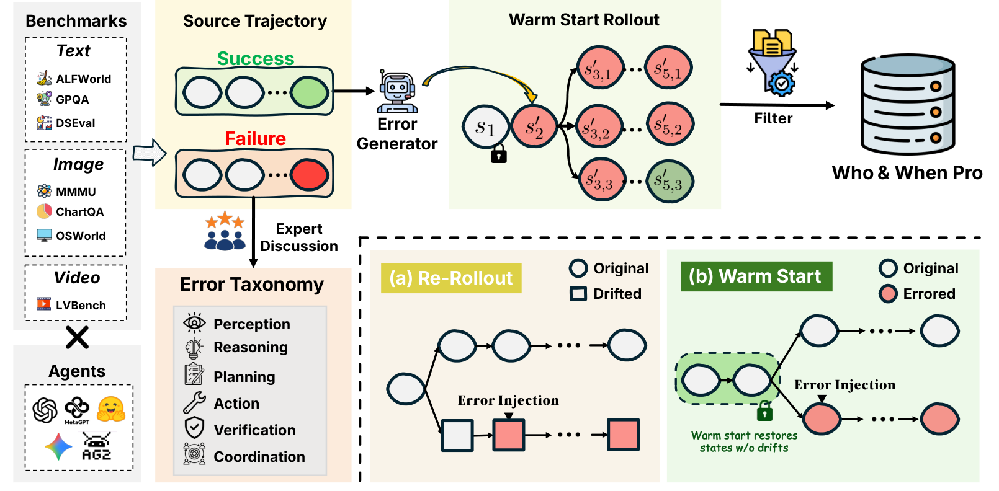
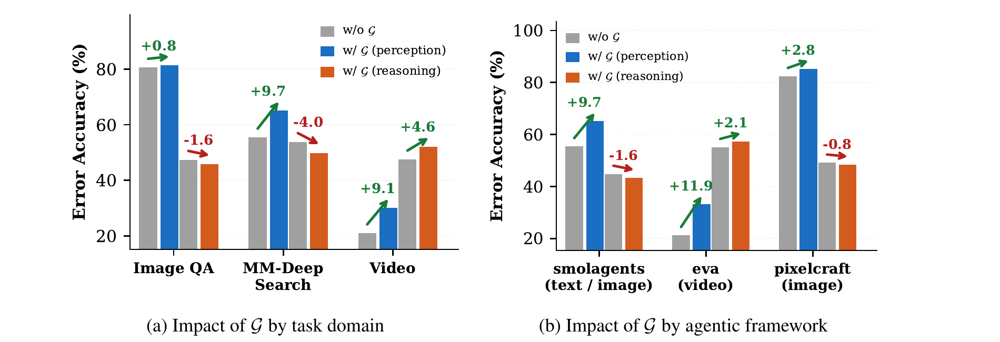

Who&When Pro：能找出 Agent 出错的位置，不等于解释了失败原因
Who&When Pro：能找出 Agent 出错的位置，不等于解释了失败原因
关键问题：Agent 最后答错了，LLM 裁判能否区分“第一个把任务带偏的错误”和“后面最显眼的症状”？判断裁判对不对，又需要可靠的步骤标签。
关键做法：从成功轨迹出发，回放注入点之前的动作与环境，只在一个模型调用上诱导错误，再让原 Agent 继续执行，构造带已知注入位置的失败基准。主要贡献是数据构建与评测，而非新的归因模型。
读完应记住：位置定位比错误类型诊断容易；完整轨迹协议总体更有效；标准答案有时会干扰过程诊断，但论文图表明确存在反例；“注入点已知”提供了强监督，却还不能直接等同于“唯一因果根因已被证明”。
1. 背景信息
- 论文：Who&When Pro: Can LLMs Really Attribute Failures in AI Agents?，arXiv v1，2026-07-10。本文按预印本阅读，不从稿件中的 ICML 模板信息推断录用状态。
- 团队：Penn State、AG2ai、MBZUAI、Oregon State、Mathos AI。
- 来源：摘要页 · HTML 全文 · PDF · 项目页。
- 阅读范围：官方正文与附录 A–K；关键数字、Figure 7 和主表另用 PDF 核对。另于 2026-08-31 静态核查公开评分代码
score.py与leaderboard.py，补充指标实现细节；未运行作者评测或重新复现表中结果。
2. 关键问题：眼镜品牌已经纠正，最终答错还应归因于哪里？
论文 Appendix B.2 / Figure 9 给出一个由错误注入生成的具体案例。用户提供眼镜图片，问它什么时候发布；图片带有 Gentle Monster 品牌信息，任务参考答案是 2024-05-01。以下为论文展示轨迹的转述，不是对商品事实的独立核验。
| 步骤 | Agent 做了什么 | 对归因的意义 |
|---|---|---|
| 1 | 按 Gentle Monster 与 Jennie 的线索进行图片搜索 | 最初品牌线索正确 |
| 2，注入点 | 突然声称这是 Ray-Ban Meta 眼镜，并据此搜索发布日期 | 凭空换了产品身份，作者标为 Hallucination |
| 3 | 承认上一步品牌认错，改回 Gentle Monster；但搜索了错误系列 Jentle Garden | 出现部分自我纠正，也留下新的系列混淆 |
| 4 | 按 Jentle Garden 回答 2022-03-10 | 最终答案错，但这是最晚的症状 |
读这条轨迹，至少有三种直觉：第 2 步编造品牌、第 3 步选错系列、第 4 步没有核验。只告诉裁判最终答案错了，并不足以决定应该修哪一步。 论文把 decisive step 定义为“纠正该步动作就会使失败变为成功”的最早步骤（§3），并把已知注入的第 2 步作为本例标签；这与“找任意一个明显错误”不同。
原版 Who&When 只有 184 条轨迹且限于文本（Table 1）。扩大人工精标成本高，直接让模型给自然失败打标签，又容易把模型的解释当真值。本文选择反过来：先知道系统在哪里被改坏，再测试裁判是否找得回来。
3. 关键方法：固定成功前缀，让一个错误产生真实后续
从同一个眼镜案例走一遍
把上述案例映射到 §3.3 的构建流程：先有一条完成任务的成功 seed；在适合产生幻觉的调用上生成诱导提示；回放第 1 步，恢复原上下文和工具状态；让原 Agent 在第 2 步生成错误的 Ray-Ban 判断；撤去这一调用上的诱导，按原设置继续执行，得到第 3–4 步。最后用任务判分器确认失败，才保留样本。
这里的第 2–4 步行为来自附录案例；成功 seed 的完整内容没有在该案例中展示，以上是流程映射，不是对未公开轨迹的复原。 部分纠正后的错误答案也会被保留：过滤条件是最终是否失败，不要求 Agent 永远不尝试纠正。

看图右下角：从头重跑时，注入前就可能出现与 seed 不同的动作；warm start 则试图锁定共同前缀。上方的后续分支中也有成功结局，说明注入不必然造成失败，成功恢复的轨迹会被筛掉。图源：论文 Figure 2，原图，Liu 等，CC BY-NC-SA 4.0，未改动。

真正决定标签质量的三个设计
第一，先约束错误空间，再生成错误。 人工检查自然失败，归纳感知、推理、规划、行动、验证、协作六大类，共 18 种细分模式；再为每个 Agent–benchmark 组合确定哪些错误合理、应在哪些位置发生。自然失败用于校准 taxonomy，并不直接作为最终标注样本（§3.1–3.2）。
第二，让原 Agent 自己说出错误。 一个 frontier model 根据任务、已有上下文和目标模式生成诱导提示，再把提示补入目标调用，由原 backbone 生成错误动作。两阶段设计避免直接塞入一个风格突兀的外部答案。Appendix K 中，幻觉提示要求沿一个没有观测依据的错误信念继续搜索；推理错误提示则要求引用真实观测，却错误连接其中的实体或事实。二者都可以通过错误搜索改变后续证据，而非只是把最终答案替换掉。
作者称这样能保持 on-policy；我会把它理解为由同一个模型产生、尽量维持行为风格。条件上下文已经被干预，不能据此认定它与原提示下的自然错误同分布。本文不训练新的参数。
第三，回放的是执行状态，不只是粘贴聊天记录。 原动作需要重新经过工具解析、代码执行和环境交互。静态搜索与页面结果使用缓存；有状态浏览器重新执行动作，检测到回放异常就终止该注入尝试。之后过滤成功恢复、暴露注入指令等构建痕迹的轨迹。正文还说会过滤注入前正确答案已很显眼的样本，但 Appendix B.1 的 Pokémon 案例又先检索到了正确日期，过滤阈值与例外范围未解释清楚。[?]
用下面的记号概括生成过程，这是笔记者整理，不是论文编号公式：
$Y=1$ 表示任务成功；$\tilde a_t$ 是唯一被主动注入的错误动作，后面的波浪号表示 Agent 自然产生的、可能改变的后续动作。保留样本的标签为注入 Agent、第 $t$ 步及目标错误模式。
这比从头重跑后强行认定注入点是根因更可控。不过，只有主动改动一个位置，不代表随机 rollout 中只存在一个影响结局的变量；这条因果边界留到 Insights 讨论。
4. 数据与评估：定位、分类、联合正确必须分开看
4.1 数据、评估设置与标签可信度
Table 2 / Figure 3 报告 12,326 条失败轨迹，来自 26 个 benchmark、15 种 Agent 框架；平均 7.5 步，最长 50 步。图中取整比例为文本 51%、图像 42%、视频 7%；单 Agent 76%、多 Agent 24%。视频部分来自 LVBench，由 EVA / DVD 生成（Table 7），不能把三种模态理解为等量、同任务的受控比较。
生成轨迹主要采用 GPT-4.1 与 Gemini 3 Flash（Appendix F.2）；评估裁判是另外列出的 10 个模型，其中 7 个支持多模态。主评测把完整轨迹交给裁判，不提供任务标准答案，不截断、不摘要（§4.1）。协议和标准答案实验使用分层抽样的 1,444 条子集。
标签可信度也要拆开看。 三名独立标注者复核 100 条分层样本，多数票认可 94% 的步骤标签、90% 的责任 Agent 标签和 90% 的错误大类标签；大类一致性 Fleiss’ $\kappa=0.73$，2% 的轨迹被多数人认为没有明确 decisive error（§3.5 / Table 3）。这支持注入点通常可辨认，但标注者看得到生成标签，且复核的是六大类，不能说“18 种模式的人类准确率已有 90%”。
4.2 用四条轨迹算一遍 Agent、Step、Error、Joint
这里是在给诊断失败的 LLM 裁判打分，不是在计算原 Agent 的任务成功率。裁判对每条失败轨迹输出三个字段：责任 Agent、出错步骤、错误类型。前三个指标分别评价一个字段，Joint 检查三个字段是否在同一条轨迹上全部正确（论文 §4.1）。
下面是为便于理解构造的例子，不是论文实验数据：四条轨迹来自同一个多 Agent 框架，只有“幻觉”和“计算错误”两种类型，且每条只有一个标准标签。先算该框架内部的分数，再讨论跨框架汇总。
| 轨迹 | 标准标签：Agent / 步骤 / 类型 | 裁判预测 |
|---|---|---|
| ① | A / 2 / 幻觉 | A / 2 / 幻觉 |
| ② | B / 4 / 幻觉 | B / 3 / 幻觉 |
| ③ | A / 3 / 计算错误 | B / 3 / 幻觉 |
| ④ | B / 5 / 计算错误 | B / 5 / 计算错误 |
Agent：责任 Agent 猜对了多少？ 只比较第一个字段，①②④正确，③错误，所以该框架的 Agent 为 $3/4=75\%$。②虽然猜错了步骤，仍然计入 Agent 的正确数。单独报告的 Agent 指标排除单 Agent 框架，因为只有一个执行者时，“谁”的判断缺少区分度。
Step：出错步骤猜对了多少？ 只比较第二个字段，①③④正确，②把第 4 步猜成第 3 步，所以 Step 为 $3/4=75\%$。③即使 Agent 和类型都错，步骤仍得分。主指标不因“离答案很近”而给部分分；附录的 Step@1、Step@2 才允许邻近步骤偏差。
Error：每一种错误类型都能识别好吗？ 它是各类 F1 的平均值，即 macro-F1，不是“类型猜对条数 ÷ 总条数”，也不是只在步骤猜对的样本上计算。对类别 $c$：
$TP_c$ 是正确识别为该类的数量，$FP_c$ 是把其他类误报成该类的数量，$FN_c$ 是漏掉该类的数量。套入同一个例子：
| 类别 | TP：正确识别 | FP：误报 | FN：漏报 | F1 |
|---|---|---|---|---|
| 幻觉 | 2：①② | 1：③ | 0 | $4/(4+1)=80\%$ |
| 计算错误 | 1：④ | 0 | 1：③ | $2/(2+1)\approx66.7\%$ |
本例的类型准确率为 $3/4=75\%$，但报告的 Error 是约 73.3%。macro-F1 让每种错误类别等权，避免常见类别主导分数。当前公开实现中的 $C$ 是该“模型 × 模态”评估单元里真实标签实际出现的类别数，不固定为 18；18 是整个基准的 taxonomy 大小。leaderboard.py 的 macro_f1
Joint：一整份诊断全部正确的比例。 每条轨迹必须同时通过 Agent、Step、类型三个判定。①④全部正确，②③各有字段错误，所以该框架的 Joint 为 $2/4=50\%$。它不是把三个汇总指标相乘，也不给部分正确的诊断计分。
在没有备选标签的这个例子里，若用 $A_i,S_i,E_i\in\{0,1\}$ 表示第 $i$ 条轨迹三个字段是否正确，那么：
$f$ 是框架，$N_f$ 是其轨迹数。这里的 $E_i$ 是单条轨迹的类型是否正确，不是前面那个汇总后的 Error macro-F1。公开代码也是先得到独立的三个布尔值，再检查是否同时为真。逐条判分 · Joint 汇总
4.3 最后怎样汇总？框架等权与类别等权是两件事
论文正文主要给出指标含义，当前公开脚本补充了“先按框架计算，再平均”的步骤。对一个“模型 × 模态”评估单元：
| 指标 | 当前公开代码的汇总方式 |
|---|---|
| Agent / Who | 每个多 Agent 框架内部计算责任 Agent 准确率，再对这些框架等权平均 |
| Step / When | 每个框架内部计算步骤准确率，再对所有框架等权平均 |
| Error / What | 合并该评估单元的所有轨迹，按真实标签中出现的错误类别计算 macro-F1；不先按框架平均 |
| Joint / All | 每个框架内部计算三个字段同时正确的比例，再对所有框架等权平均 |
例如，框架 X 有 1,000 条轨迹、Step 为 80%；框架 Y 有 10 条、Step 为 20%。最终 Step 是 $(80\%+20\%)/2=50\%$，不是把 1,010 条混起来算出的约 79.4%。这是先让框架等权，而 Error 是让错误类别等权。因此，Joint 高于 Error macro-F1 并不构成数学矛盾，两者的聚合方式不同。cell_metrics 实现
代码还澄清了三个容易影响理解的边界：
- 单 Agent 样本仍参与 Joint。 排除它们只针对单独报告的 Agent 指标。在 Joint 中，仍要求 Agent 字段匹配该框架规定的名称；例如 smolagents 和 EVA 使用固定名称
agent，并非无条件放行。 - Step 比较的是框架对应的展示坐标。 例如 DVD 去掉前两条框架消息的偏移；EVA 把 assistant 与工具返回折叠为一步；Debate/DyLAN 只比较轮次。因此“精确匹配”不能一律理解成原始日志行号相等。
- 部分样本允许备选标签。
score.py将accepted_predictions按 Agent、Step、类型分别并入可接受集合；即使三个字段分别来自不同备选项，也可能全部通过。这时 Joint 表示三个字段各自被接受，不保证整个三元组对应同一个备选解释。匹配规则
以上实现细节按 2026-08-31 的公开 main 核查，不代表已复现论文原表。当前脚本默认还把 image_gui 单列为一个模态；若要复现正文的 Text / Image / Video 三组结果，需要进一步对齐代码版本、数据分组和运行配置。
5. 关键结果：能定位附近，未必能解释类型
5.1 主表没有一个模型全面占优
下面挑选能改变判断的结果，单位为百分制，均来自 Table 4 的完整基准、All-at-Once、无标准答案设置。
| 模态 / 模型 | Step 准确率 | Error macro-F1 | Joint 准确率 | 该行说明什么 |
|---|---|---|---|---|
| Text / Qwen3.5-122B | 73.9 | 17.0 | 21.6 | 文本步骤定位最好，但模式诊断仍弱 |
| Text / GLM-5 | 71.1 | 22.2 | 25.3 | 文本 Error 与 Joint 最好 |
| Image / GPT-5.4 | 65.2 | 26.5 | 30.2 | 图像 Step 与 Joint 最好 |
| Video / Claude Sonnet 4.6 | 64.4 | 37.4 | 26.4 | 视频 Step 最好 |
| Video / Gemini 3 Flash | 59.8 | 40.0 | 23.0 | 视频 Error 最好 |
| Video / Llama-4 Maverick | 59.5 | 36.4 | 30.4 | 视频 Joint 最好 |
注意，正文概括中的文本 73.9% Step 和 22.2 Error F1 来自不同模型，不能拼成某个模型的一组成绩。更值得关心的是：各模态最好的 Joint 仍在 25.3–30.4 之间；结合 §4.3 的框架平均规则，不能直接把它读成“所有轨迹中恰有四分之一到三成诊断全对”，但它仍说明联合诊断能力有限，漂亮的自然语言解释不能直接当作修复依据。
Figure 4b / Figure 10 中，规划、验证和协作错误常被吸入“推理错误”类别，支持裁判容易把下游症状当作解释的观点。但混淆矩阵本身不能证明模型没有因果推理；错误类的语义重叠也可能造成混淆，人工修正矩阵 Figure 11 同样有相近类别间的迁移。
精确定位失败不等于完全没有找到位置。 Appendix D.4 把允许误差从 0 步放宽到 1 步后，Step 平均增加文本 13.9、图像 16.9、视频 28.1 个百分点。对视频，邻接步骤歧义是重要组成部分。Figure 4c 还显示长轨迹定位更差，但其长度分桶未控制任务和框架，不能把下降全部归因于上下文长度本身。
5.2 看完整轨迹通常更好，但实验同时改变了决策规则
作者比较三种裁判协议：一次读完整轨迹；逐步阅读并在首次判错后停止；二分切片定位。Table 6 在消融子集上给出的 GPT-5.4 结果如下，数值是三种模态的平均：
| 协议 | Step 准确率 | Error macro-F1 | Joint 准确率 |
|---|---|---|---|
| All-at-Once | 65.5 | 24.9 | 25.0 |
| Step-by-Step | 55.8 | 19.6 | 17.9 |
| Binary Search | 62.8 | 23.0 | 25.0 |
跨模型平均，完整轨迹相对逐步协议的 Step 提高 7.6 个百分点。逐步协议过早停止，不能利用后续纠错信息；二分则可能割断证据链。眼镜案例里的第 3 步自我纠正正是需要回看前后文的信息。Table 6 也有例外：GLM-5 的 Joint 在逐步协议下略高，20.3 对 20.0。
这支持把全文协议作为可容纳整条日志时的起点。它尚未排除“允许回溯的逐步裁判”，而且 Appendix J 的逐步提示询问的是当前动作是否会妨碍任务，全文提示要求首个 decisive error，二者不只是输入长度不同。Figure 6 的成本优势是当时 API 报价下的结果，也不等于实际服务延迟或自部署成本。
5.3 标准答案既可能补足证据，也可能诱发错误归因
回到眼镜案例：不提供标准答案时，Claude Sonnet 4.6 和 Gemini 3 Flash 都找到了第 2 步的幻觉。提供日期后，两者把注意力转向第 3–4 步的系列和年份混淆，改判为 Reasoning Error（Appendix B.2）。作者据此提出，标准答案可能让裁判绕过过程检查，只比较最终结果。

图源：论文 Figure 7，PDF 第 8 页，仅裁取图表区域，未改数值；Liu 等，CC BY-NC-SA 4.0。灰色为无标准答案，蓝色为提供答案后的感知错误归因，橙色为提供答案后的推理类错误归因。这里衡量的是特定类别样本上的 per-trace accuracy，不要与 Table 4 的 macro-F1 混用。
正文的概括强于图中证据。 §4.5 称推理类归因在所有任务和框架上下降或持平；Figure 7a 实际标注 Image QA 为 −1.6、MM-Deep Search 为 −4.0，但 Video 为 +4.6 个百分点。Figure 7b 中 EVA 也为 +2.1。图上感知类均提高，但推理类有升有降。
所以更稳妥的结论是：标准答案的作用取决于场景；案例证明它可能触发误归因，未证明它普遍伤害推理诊断。 这组图没有误差条或重复运行统计，较小变化的稳定性也需要验证。
6. Insights：这套基准怎样用才不越过证据？
-
最值得复用的是回放基础设施，“精确根因”的承诺则需要额外实验。 成功 seed 与注入失败共享前缀，是比事后解释更强的证据；但后续动作会重新采样，恢复一个动作未必总能恢复原成功结局。Appendix F.3 还说页面原文被缓存，二级 LLM 的摘要却不缓存，而摘要会进入观测上下文；浏览器回放主要描述的是异常检测，也没有报告逐状态等价率。这些细节没有证明标签错误，却让“所有前缀完全一致”的保证需要额外核验。我会补两组配对实验：不注入但重新续跑的失败率；修复注入动作后多次续跑的成功率。同时记录进入模型的完整观测哈希，而不只比较原始网页。
-
眼镜案例暴露了“首个错误”与“修复位置”之间的缝隙。 第 2 步的品牌幻觉确实是首个已知注入错误，但第 3 步已经纠正品牌，又选错系列。仅凭展示的这条路径，还不知道修复第 2 步后系列混淆会不会照样发生，也不知道直接修复第 3 步是否足以成功。作者标签适合测试能否找回最初干预；真实调试还应测修复是否有效。再加上数据只保留未能恢复的注入样本，我会把自然失败和成功自纠错轨迹作为独立测试集，避免诊断器把所有早期偏离都判为决定性失败。
-
模式 F1 低，既可能是诊断能力差，也可能是任务边界不够清楚。 主实验考 18 个细类，人工复核主要确认六大类；而“回答了另一个问题”“误用正确证据”“目标漂移”在真实轨迹中可能同时成立。应先补不展示生成标签的细类盲标、报告争议率，再对比六类和十八类成绩。用于工程诊断时，我更愿意先让裁判输出“哪一步引入了什么错误事实、后续哪里依赖它”，再映射类别，并允许无法唯一归因；这是由本文混淆现象推出的实验建议，不是已验证的新方法。
7. 连接与发现
- MOC-LLM-Agent-Evaluation-and-Debugging — Topic: 给 Agent 失败定位补充大规模、多模态、单点注入标签，也提示定位指标与修复效果应分别验证。
- Causal-Agent-Replay-Counterfactual-Attribution — 本库相关笔记：可对照“从成功轨迹植入错误、评估静态裁判”和“从失败轨迹执行反事实重放、估计结局变化”两种用途；前者提供评测标签，后者试图回答干预能否挽救失败。这里不是两种方法性能的直接比较。
📝 修订记录
- 2026-08-31 「解释四个指标怎么计算，并更新对应 md 和 html」→ 在第 4 节补入四条构造轨迹，逐项计算 Agent、Step、Error macro-F1 和 Joint；静态核查公开代码，补充框架等权平均、实际类别数、单 Agent 的 Joint 判分、步骤坐标映射和备选标签规则，替换已澄清的不确定项，并注明公开实现与论文分组的边界。